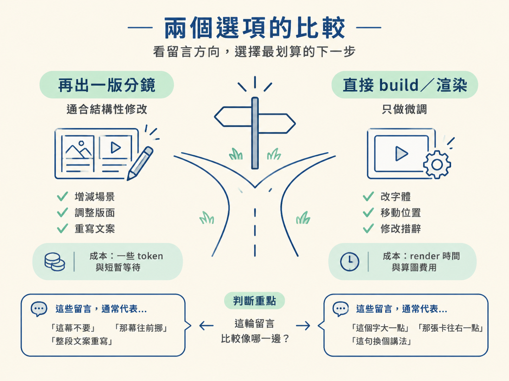
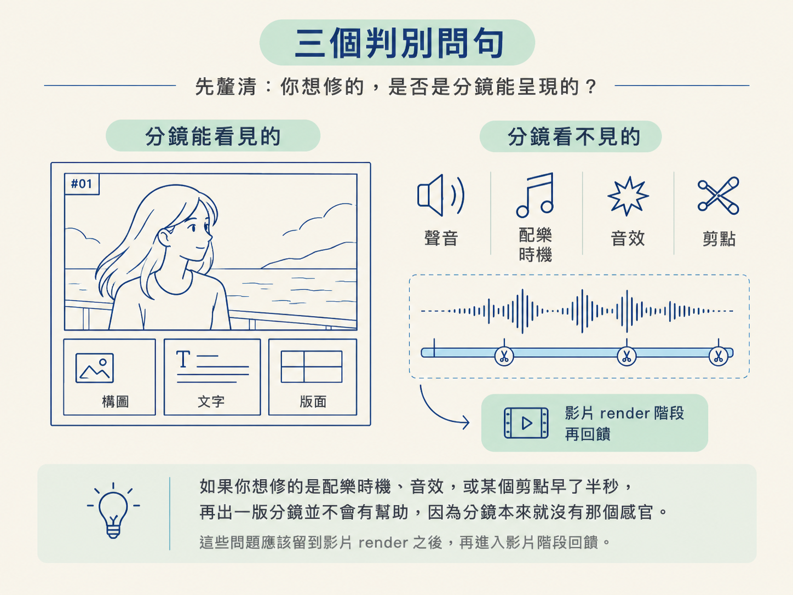
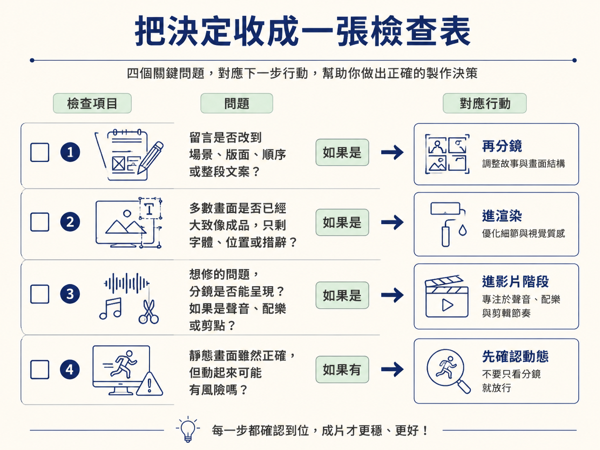

在影片真正 render 之前，分鏡像是一張施工圖：你可以先確認畫面安排、段落結構和動態規則，而不用先付出完整算圖的成本。問題是，留言貼回去之後，什麼時候該再請 agent 出一版分鏡？什麼時候則可以放行，直接 build／渲染？
這一課要處理的，就是這個 pipeline 裡最後的岔路。你會用「離目標還有多遠」以及「留言是在改方向，還是在修細節」來做判斷，並透過一個 title-card 分鏡的逐 beat 迭代案例，看懂這條界線怎麼拿捏。
再出一版分鏡和直接進渲染都可能是正確選擇，差別在於你現在要解決的是哪一種問題。可以先用下面這張表，把兩邊放在一起看。
| 再出一版分鏡 | 直接 build／渲染 | |
|---|---|---|
| 付出的成本 | 一些 token，以及一輪很短的等待 | render 所需的時間與算圖費用 |
| 適合的留言 | 要動到結構，例如增減場景、調整版面、重寫文案 | 只做微調，例如改字體、移動位置、修改少數措辭 |
| 整體訊號 | 你還想調整很多幕，或規則還沒定下來 | 大多數畫面的結構已經正確，只剩小幅修整 |
| 主要風險 | 多花一輪時間，但能讓方向更穩 | 如果方向其實還差很遠，可能得整支影片重做 |
判斷重點不在哪一欄「比較好」，而在這一輪留言比較像哪一欄。
如果留言是「這幕不要」、「那幕往前挪」、「整段文案重寫」，代表方向還在校準，再分鏡一輪通常比較划算。相反地，如果留言大多是「這個字大一點」、「那張卡往右一點」、「這句換個講法」，表示結構已經站穩，直接做影片會更快。

實務上不需要把每個細節分析得很久。你可以先問自己三個問題，讓決定變得更具體。
第一，這一輪留言裡，有幾則是在改結構，而不是改細節？
如果結構性的修改已經超過少數一兩則，就再分鏡。因為「一幕要不要存在」、「場景順序怎麼排」、「整段文案怎麼寫」這類問題，用分鏡確認最便宜。等 render 完才發現，通常就得付出更高的重做成本。
第二，分鏡上的每一幕，是不是已經大致像你要的樣子？
如果答案是「大致像，只剩一些細節」，這就是可以進渲染的訊號。你不需要把每一幕磨到百分之百完美，因為有些細節必須等影片真的動起來，才看得出來是否順眼。
第三，你想修改的東西，分鏡能不能呈現？
這一題很容易被忽略。分鏡主要是靜態畫面：它看不到聲音，聽不出配樂，也感受不到剪點是否順暢。
所以，如果這一輪真正想修的是配樂時機、音效，或某個剪點早了半秒，再出一版分鏡並沒有幫助。問題不在分鏡做得不夠好，它本來就沒有那個感官。這些問題應該留到影片 render 之後，再進入影片階段回饋。

「結構對了就直接 render」是一個好用的方向，但不是永遠成立。至少有兩種情況，會讓你的選擇翻轉。
第一種：靜態畫面看起來對，動起來卻可能出問題。
有些段落的構圖很漂亮，分鏡看起來也沒有明顯問題，但一旦真的動起來，可能出現節奏、轉場或動態安排上的麻煩。這時候，不能只因為分鏡看起來漂亮就直接 render。
你可以請 agent 先用更接近成品的方式確認動態，或先把這一小段獨立做出來檢查。分鏡能幫你確認構圖，卻看不到所有動態細節，這是它本身的限制。
第二種：現在只剩聲音與剪點要確認。
如果這一輪意見全部集中在配樂時機、某個音效，或某個剪點早了半秒，再分鏡就是白跑一輪。這些東西只有影片裡才存在，正確做法是直接 render，進到影片階段再回饋。
換句話說，不要把「分鏡看不到的東西」硬塞回分鏡階段。工具看不到的問題，應該交給能呈現它的階段處理。
來看一個 title-card 的案例。這位創作者想在一段影片上疊加標題卡，因此先做分鏡，再一輪一輪修正。整個過程中，影片一次都沒有 render，所有判斷都先在分鏡階段完成。
一開始，他請 agent 做一頁 HTML 分鏡，把整支影片的計畫視覺化。計畫分成兩段：
字體與顏色則沿用他慣用的設計系統。
第一版分鏡回來後，他發現 agent 大致理解了「兩段式」和轉場，但誤解了卡片數量。他原本只想在每個段落放一張卡，分鏡卻擺了更多張。
這正是分鏡的價值：問題在還沒 render 之前就被看見了。若等影片做完才發現卡片數量不對，後面就可能得連同動畫一起重做。
於是，他送出第二輪留言，把規則講得更清楚：
這一輪之後，分鏡明顯更接近他想要的樣子。不過，還有兩次小修正：agent 一開始沒有抓到某個 logo，創作者就直接提供本機檔案路徑；接著，他又請 agent 把動畫「再放大膽一點」，結果 agent 自己多加了一段 logo 動畫。
把這個案例放回前面的三個問句，就能看出每次為什麼都選擇再分鏡：
等到版面和動態規則都對齊後，他才把動態圖像套到剪好的影片上，進入 render 階段。
這個案例裡，「再分鏡」之所以一路都是合理選擇，是因為每一輪仍有結構或規則層級的事情要定。一旦這些都確定，剩下的就屬於影片階段的問題。
你可以在每次收到留言後，快速檢查以下幾點：

可操作的規則是：留言動到結構或規則，就再出一版分鏡；留言只剩細節，而且分鏡已經大致像成品，就直接進渲染。聲音與剪點分鏡呈現不出來，必須留到影片階段回饋。
title-card 的案例正好示範了這條界線：前幾輪都在收斂結構與規則，所以持續分鏡；等版面與動態邏輯對齊，才把結果交給 render。
到這裡，整條路徑就接起來了：先理解為什麼要分鏡，再看懂分鏡該包含什麼，接著學會發分鏡 prompt、留下帶時間碼的留言，最後判斷什麼時候該再修、什麼時候可以放行。當影片真的 render 出來後，下一個節點就是在最終影片上完成最後一兩成的執導。